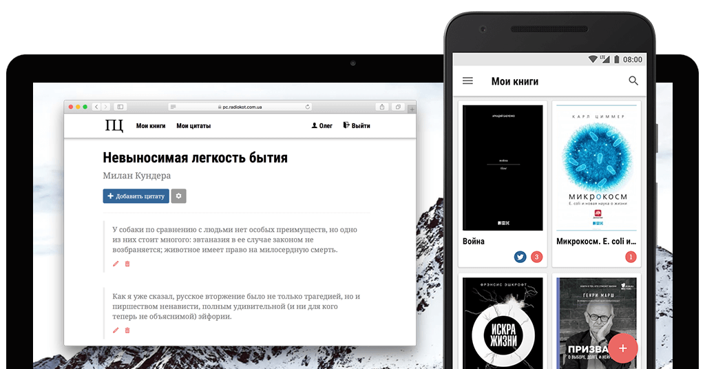

Олег Корецкий
Олег Корецкий
Просто цитатник
Хранилище для цитат из книг. Написанный за 2 вечера, «Просто цитатник» такой простой, что у его страницы даже нет фона. Информация о книгах берется с сайта LiveLib. Для владельцев читалок Kindle есть приятная фича – экспорт цитат через Twitter.
«Просто цитатник» станет вашим помощником в хранении любимых цитат, а еще его можно сдать как лабораторную по PHP.
